Generate funnel plot for meta-analysis¶
This generates the funnel plots in fig2 and fig3 of this meta-analysis study: https://www.liebertpub.com/doi/abs/10.1089/jicm.2022.0586

This generates the funnel plots in fig2 and fig3 of this meta-analysis study: https://www.liebertpub.com/doi/abs/10.1089/jicm.2022.0586
